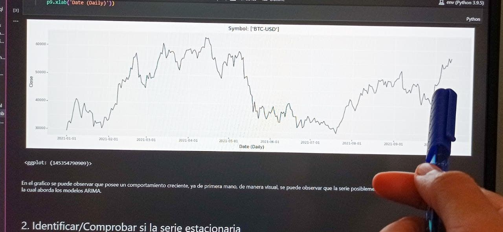

ARIMA Models with BTC-USD
Here I show you the flow diagram of each the project that I'm doing and the topic of the next project!.
In this part, I will talk about different topics associated with time series in Python, the goal of how to use different techniques depending on the behavior or phenomenon under study is presented.
Here I show you the flow diagram of each the project that I'm doing and the topic of the next project!.

Here I show you simulation of behavior with different parameters.
Here I show you differents books associated with several topics in my portfolio.

Here I show you a bit articles of topic interest for me and I share with you.